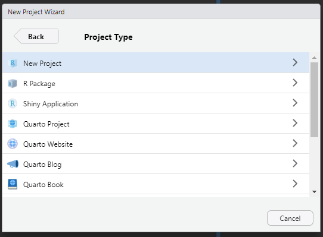

getwd()
#output:"C:/Users/jsada/OneDrive - The Pennsylvania State University/Documents"#: Starting a project ## Starting a new project To begin, we must first open a new project.
- To open a new project, you first select the RStudio app on your computer. Unless immediately prompted, select New Project under the File tab.

- Next you will be prompted select which Directory type. Select New Directory.

- Next, in the Project Type screen, you will select New Project.

- Once selected, you will be prompted to name the Directory. Make this name unique and choose where you would like it to be saved.

R-compatible data sets
When importing a data set from excel into R, the file type must be a .csv, rather than the typical .xlsx.
For further instruction on preparing an R-ready .csv, please see the link below.
How to get data into R
Importing data
Working directory
Your working directory is where you will have R pull data sheets from. There are two common ways of doing this.
The first step is to determine where R currently thinks our working directory is. To do this, we use the getdw function.
As you can see, the output shows the pathway no my computer where R is looking for files. If we wish to change this, we have two options.
First, we will use the setwd package. Within the parentheses of this function, we will write out the desired pathway. Let’s say I wish to be more specific than just the Documents folder.
setwd("C:/Users/jsada/OneDrive - The Pennsylvania State University/Documents/Research/R/Intern Tutorial/Book")The second method for setting your working directory is done through the Session menu at the top. You will then hover over Set Working Directory and then select Choose Directory… From here, you will navigate to the folder you wish to pull data from.
 Now that we have our working directory set, we can take a look into the folder.
Now that we have our working directory set, we can take a look into the folder.
To see how many files are in my directory, I will use the length function.
length(list.files())
#output: 24To see the first five files within my directory, I will use the head function.
head(list.files())
#output:
#[1] "_book" "_quarto.yml" "Book.Rproj" "cover.png"
#[5] "directory.png" "Glossary.qmd" The last command we will run to investigate our working directory is the %in% operator. We will use this operator to see if there is specific file within our directory. This operator will provide us with a logical out (TRUE or FALSE). When calling a specific object, we must use either half, or full parentheses.
'Book.Rproj' %in% list.files()
#output: TRUEGithub
In this book, I will not cover using the Github platform for data storage. If you wish to explore this further, please see the linked tutorial below.
Types of data
Now that we have our data set imported into R, we can begin looking our data. The first step is gaining an understanding of the type fo data we have. Within R, there are 5 main types of data. These include:
| Data type | Example |
|---|---|
numeric |
(10.5,55,680) |
integer |
(1L, 55L, 100L, where the letter “L” declares this an integer) |
complex |
(9+3i, where “i” is the imaginary part) |
character |
(Also known as strings - “k”, “bugsRcool”, “11.5”, “etc.”) |
logical |
(TRUE and FALSE) |
When it comes to data manipulations, statistical tests, model building, and developing plots, it is incredibly important that our data are classified as the correct data type. To determine this for single variables or values, we use the class function.
Copy these examples into your script to try this function out.
# numeric
x <- 10
class(x)
# integer
x <- 10L
class(x)
# complex
x <- 9i + 3
class(x)
#character/string
X <- "Boy howdy, this is rivetting stuff"
class(x)
# logical
x <- TRUE
class(x)